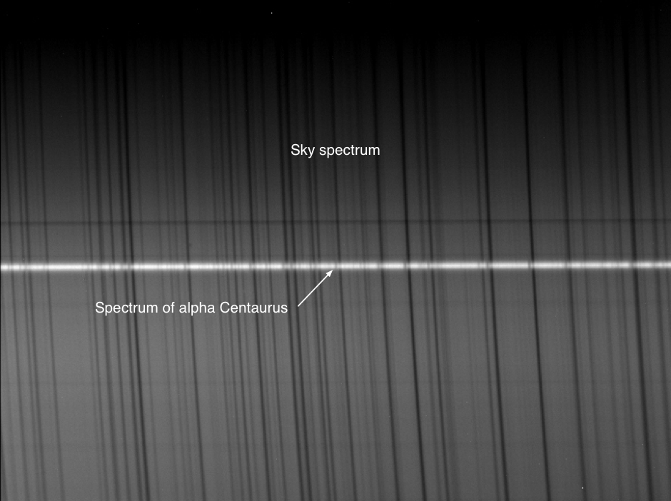
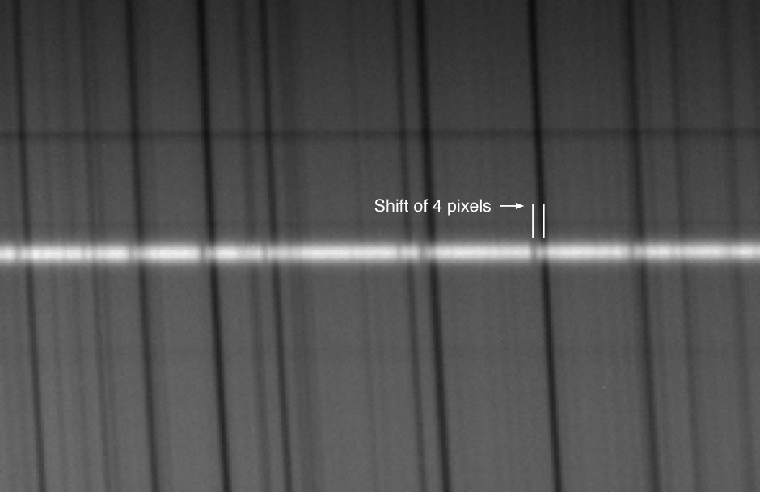
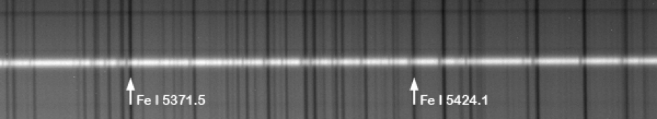
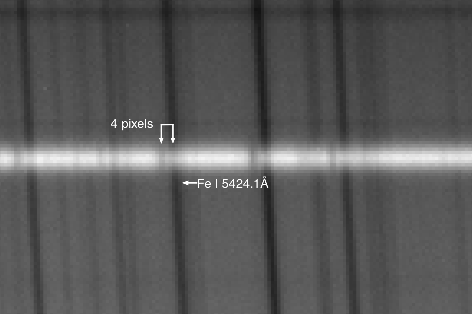

The following spectral image was taken during the day on January 25th, 2016. It shows a spectrum of Alpha Centaurus superimposed on the background solar (sky) spectrum. This high resolution Lhires III spectral image spans about 130Å in the ‘green’ part of the EMS.

As a type G2V star, Alpha Centaurus exhibits the same absorption features as the sun.
Careful inspection shows that the lines in the spectrum of Alpha Centaurus are ‘shifted’ by a few pixels towards the blue.

This is Doppler shift - a result of the star’s negative radial velocity relative to the Earth (ie, Alpha Centaurus is moving towards us).
Two of the lines on the solar spectrum belong to iron, indicated on the image below at wavelengths of 5371.5 and 5424.1 Angstroms respectively.

The distance between these two known lines can be measured by zooming in on the image and counting the pixels. Between these two iron lines there are 258 pixels, corresponding to a difference of 52.6 Angstroms.
5424.1Å – 5371.5Å = 52.6Å
Accordingly, the spectral dispersion is:
52.6 ÷ 258 = 0.2Å/pixel
Zooming in and counting pixels again, we see that there are approximately 4 pixels between The 5424.1Å line in the solar spectrum, and the corresponding blue shifted line in the spectrum of Alpha Centaurus.

The Doppler shift is:
4 x 0.2 = 0.8Å
Or, as it is a shift towards the blue:
-4 x 0.2 = -0.8Å
The non-relativistic radial velocity of Alpha Centauri is determined using the formula:
(Velocity equals the speed of light times the shift in wavelength divided by the wavelength.)
v = 300,000 x -0.8 ÷ 5424.1 = -44.2 km/s
A heliocentric velocity of 20.0 km/s for alpha Centaurus on the 25th January was determined using tools is ISIS. Taking this into account we get an actual radial velocity of:
-44.2 + 20.0 = -24.2 km/s.
The published radial velocity from SIMBAD shows a value of alpha Centaurus is -22.3 km/s.